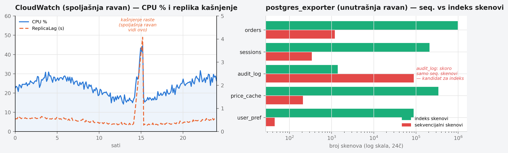
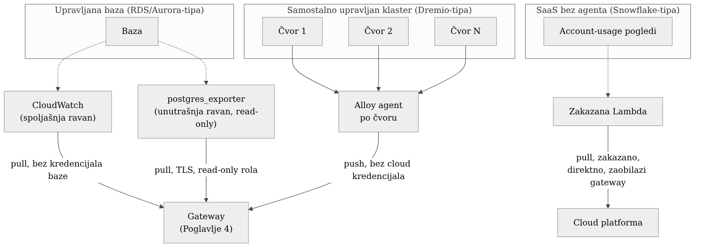

Poglavlje 7 — Kada ne možeš da instrumentiraš izvor: pull-obrasci
Lekar ima tri potpuno različita nivoa pristupa pacijentu, i bira metodu prema tome koliko duboko sme i može da uđe. Za pacijenta u sopstvenoj ordinaciji, može da izvadi krv i pošalje je na analizu — invazivno, potpuno pod kontrolom, vidi unutrašnje vrednosti direktno. Za pacijenta koji je otišao kući sa nosivim monitorom, dobija samo ono što senzor spolja može da izmeri — puls, pritisak, saturaciju kiseonika — bez ijednog reza, ali i bez uvida u ono što se dešava ispod kože. A za pacijenta koji se leči u inostranoj klinici, dobija samo ono što ta klinika dobrovoljno odluči da mu pošalje, jednom nedeljno, u izveštaju koji sam nije tražio da bude oblikovan baš tako.
Sva tri pristupa su legitimni oblici posmatranja pacijenta. Razlika nije u tome koji je "bolji" — razlika je u tome koliko kontrole lekar ima nad pacijentom, i ta količina kontrole direktno određuje koju metodu uopšte sme da bira.
Isto važi za sisteme koje ne možeš da instrumentiraš iznutra — baze kojima upravlja cloud provajder, klasteri koje sam održavaš ali čiji kod ne pišeš, i SaaS servisi nad kojima nemaš operativnu kontrolu uopšte. Ovo poglavlje pokriva sva tri nivoa.
7.1 Pitanje na koje ovo poglavlje odgovara
Sve dosadašnje poglavlje pretpostavlja da postoji proces u koji možeš da ubaciš SDK ili agent — Poglavlje 2 (aplikacije), Poglavlje 6 (batch zadaci). Ali šta radiš kad izvor telemetrije nije proces koji kontrolišeš? Kad je to upravljana baza kojoj ne možeš da instaliraš ništa na host, sistem koji sam održavaš ali čiji kod nije tvoj, ili SaaS servis koji živi potpuno van tvoje mreže?
Odgovor menja sam smer podataka: umesto da čekaš da izvor gurne (push) telemetriju ka tebi, ti moraš aktivno da je povučeš (pull) — a koliko duboko možeš da povučeš zavisi tačno od toga koliko kontrole imaš, baš kao kod lekara iz uvoda.
7.2 Kako je to urađeno — praktičan pregled
Implementacija koju knjiga prati koristi tri različita pull-obrasca, svaki prilagođen tačno onom nivou kontrole koji taj tip izvora dozvoljava.
Upravljana baza (RDS/Aurora tipa) — dve ravni. Za svaku upravljanu bazu postoje dva nezavisna izvora telemetrije, namerno, ne slučajno duplirano:
- Spoljašnji pogled — CloudWatch metrike, povučene bez ijednog
kredencijala same baze, direktno iz AWS API-ja. Ovo su infrastrukturni
signali koje AWS meri sa svoje strane: CPU, memorija, disk I/O,
ReplicaLagu sekundama, slobodan prostor na disku. - Unutrašnji pogled —
postgres_exporter, sa read-only rolom preko TLS konekcije, koji upituje sistemske statističke poglede same baze (pg_stat_user_tables,pg_stat_user_indexes,pg_stat_bgwriter) i izlaže ih u Prometheus formatu koji gateway povlači.
Ove dve ravni namerno ne zamenjuju jedna drugu — imaju različite otkaze. Spoljašnja ravan (CloudWatch) preživljava čak i kada baza u potpunosti prestane da prima konekcije, jer ne zavisi od konekcije ka bazi da bi funkcionisala. Unutrašnja ravan prestaje da radi tačno u trenutku kad bi najviše trebalo da radi — kad baza odbija konekcije — ali dok radi, vidi stvari koje CloudWatch nikad ne vidi: koji upit troši najviše vremena, koji indeks se uopšte ne koristi, kako se shared buffer prazni po tipu procesa. Jedna ravan bez druge ostavlja slepu tačku tačno u trenutku kritičnog otkaza, ili tačno u dubini koja objašnjava zašto je do otkaza došlo.
Ovako izgleda taj podatak kad stigne na dashboard — dve ravni, jedna pored druge, svaka pokazuje nešto što druga ne može:

Samostalno upravljan distribuirani klaster (tipa Dremio) — agent po čvoru. Za razliku od upravljane baze, ovde tim ima potpunu kontrolu nad hostom — može da instalira šta god treba. Rešenje: Grafana Alloy instaliran kao agent na svaki čvor klastera, koji lokalno skreipuje host-nivo metrike (CPU, memorija, disk), JVM/app metrike izložene preko lokalnog endpointa, i lokalne logove, i sve to gura ka centralnom gateway-u. Bitna arhitekturna odluka: nijedan cloud kredencijal ne živi na čvoru klastera — agent zna samo gde je gateway (interna adresa), ne kako da priča direktno sa Grafana Cloud-om. Ovo je isti princip iz Poglavlja 4 (gateway kao jedino mesto koje drži kredencijale), primenjen ovde na infrastrukturu koja fizički nije aplikacija, ali je pod punom operativnom kontrolom tima.
SaaS bez agenta (Snowflake tipa) — zakazana funkcija koja povlači spolja. Ovo je nivo najmanje kontrole, i obrazac je strukturno drugačiji od prva dva: zakazana Lambda funkcija periodično upituje sistemske "account usage" poglede koje sam SaaS servis dobrovoljno izlaže (analogno "izveštaju iz inostrane klinike" iz uvoda), i gura rezultat direktno u cloud observability platformu — ne kroz interni gateway. Ovo je namerna odluka, ne previd: watcher koji posmatra sistem izvan tvoje mreže mora da preživi čak i kad je tvoja sopstvena interna infrastruktura (uključujući gateway) u prekidu — jer inače ne bi mogao da razlikuje "SaaS servis ima problem" od "moj sopstveni gateway ima problem", što su potpuno različite dijagnoze koje zahtevaju potpuno različit odgovor. Ovaj obrazac je toliko bogat sopstvenim zamkama (strukturno kašnjenje reda veličine sat-dva, cena upita nad sistemskim pogledima, razlika između "watcher je mrtav" i "posmatrani sistem je mrtav") da dobija sopstvenu, punu studiju slučaja u Poglavlju 24.
Sva tri obrasca dele jedan princip, dovoljno bitan da se izdvoji kao pravilo knjige: watcher koji posmatra kritičnu putanju ne sme da zavisi od infrastrukture koju posmatra. Spoljašnja ravan RDS-a ne zavisi od konekcije ka bazi. Snowflake watcher ne zavisi od internog gateway-a. Ako se ovaj princip prekrši — ako posmatrač deli otkaz sa onim što posmatra — dobijaš tišinu tačno onda kad ti najviše treba glas.
Sva tri obrasca, jedan pored drugog:

7.3 Analitički deo — zašto ne postoji jedan univerzalni pull-obrazac
Zvanično stanje: fokus je gotovo isključivo na push
Vredi primetiti nešto što nezavisna poređenja retko eksplicitno kažu:
OpenTelemetry ekosistem je dizajniran prvenstveno oko push modela
(aplikacija šalje SDK-om, agent gura dalje) — što ima smisla, jer OTel
polazi od pretpostavke da imaš kod u koji možeš da ubaciš instrumentaciju.
Pull-bazirano prikupljanje (Prometheus stil "scrape") postoji kao zaseban,
stariji obrazac koji OTel Collector podržava kroz prijemnike poput
prometheusreceiver, ali dokumentacija i najveći deo tutorijala tretiraju ga
kao rubni slučaj, ne kao ravnopravan prvi obrazac. To je razumljivo za svet u
kome je ekosistem nastao — ali za sistem koji uključuje upravljane baze,
samostalno upravljane klastere i SaaS servise, pull nije rubni slučaj. On je
većina izvora koje tim ne kontroliše na nivou koda.
Zašto tri različita pull-obrasca, umesto jednog konzistentnog
Prirodan instinkt bi bio da se traži jedan, dosledan pull-mehanizam za sve tri kategorije — jednostavnije za održavanje, manje kognitivnog opterećenja. Ali tri kategorije imaju tri različita nivoa kontrole, i pokušaj da se nametne jedan mehanizam svima bi značio ili premalo (za klaster gde bi se moglo više) ili nemoguće (pokušaj instaliranja agenta na SaaS servis kome nemaš pristup hostu). Kriterijum koji određuje obrazac nije "šta je najlepše konzistentno", nego doslovno pitanje: da li mogu da instaliram nešto na host? Ako da (Dremio klaster) — agent koji gura. Ako ne, ali servis ima API/pogled koji izlaže stanje (RDS CloudWatch, Snowflake account usage pogledi) — pull spolja. Ako ne mogu ni to bez posebnih uslova (konekcija ka bazi koja može biti nedostupna) — dodatna, redundantna spoljašnja ravan koja ne deli tu istu tačku otkaza.
Cena da nije urađeno ovako: jedan izmišljen, ali realan scenario
Da je tim pokušao da RDS prati samo preko postgres_exporter-a (unutrašnja
ravan), bez CloudWatch spoljašnje ravni: u trenutku kad baza počne da odbija
konekcije — upravo najkritičniji mogući trenutak — monitoring bi utihnuo
tačno kad je najpotrebniji, jer exporter sam zavisi od iste konekcije koja je
otkazala. Tim bi video "nema podataka" i morao da nagađa da li je to zato što
je baza mrtva, ili zato što je sam exporter mrtav — dvosmislenost koja troši
dragocene minute usred incidenta. Spoljašnja CloudWatch ravan postoji baš da
tu dvosmislenost ukloni: ona nastavlja da javlja infrastrukturno stanje baze
bez obzira na to da li iko može da se konektuje na nju.
Vratimo se na lekara iz uvoda. On ne bira jednu metodu za sve pacijente — bira metodu prema tome koliko duboko sme i može da uđe, i za pacijenta gde sumnja da bi jedna metoda mogla iznenada da otkaže (baza koja može da odbije konekcije), drži i drugu, redundantnu metodu spremnu. Broj metoda posmatranja koje koristiš za jedan izvor ne bi trebalo da bude jedan, nego onoliko koliko postoji nezavisnih načina da taj izvor otkaže na način koji bi te zaslepeo.
7.4 Skupljena pravila iz ovog poglavlja
- Pre nego što izabereš mehanizam prikupljanja za novi izvor, postavi pitanje: da li mogu da instaliram nešto na host? Odgovor određuje da li ideš na agent-koji-gura ili pull-spolja, ne lična preferenca.
- Za svaki izvor koji može da postane nedostupan na način koji bi oborio i sopstveni monitoring (baza koja odbija konekcije), drži redundantnu, strukturno nezavisnu spoljašnju ravan.
- Watcher koji posmatra kritičnu putanju ne sme da deli infrastrukturu (mrežu, gateway, kredencijale) sa onim što posmatra — inače gubiš sposobnost da razlikuješ "posmatrani sistem je pao" od "moj posmatrač je pao".
- Ne teraj sve pull-izvore u jedan konzistentan mehanizam radi urednosti — nivo kontrole nad izvorom, ne estetika, određuje ispravan obrazac.
- Kad dodaš novi pull-izvor, eksplicitno zapiši (ne samo u glavi) koliko je strukturno kašnjenje prihvatljivo za taj izvor — pull retko znači "u realnom vremenu", i alarmi moraju biti podešeni prema stvarnom kašnjenju, ne prema željenom.
7.5 Vežba za čitaoca
Napravi listu svih izvora telemetrije u svom sistemu nad kojima nemaš mogućnost da instaliraš agent ili SDK. Za svaki, odgovori: (1) da li postoji spoljašnji API/pogled koji taj izvor dobrovoljno izlaže, (2) koliko je strukturno kašnjenje tog izvora, i (3) da li moj postojeći monitoring tog izvora deli ijednu tačku otkaza sa samim izvorom. Ako je odgovor na (3) "da" za bilo koji kritičan izvor — to je tvoj prvi kandidat za dodavanje redundantne, nezavisne ravni.
Izvori korišćeni u analitičkom delu
- Collecting RDS metrics from PostgreSQL databases — Datadog
- AWS RDS (PostgreSQL) Metrics and Logs — SigNoz Docs
- Create an Amazon CloudWatch dashboard to monitor Amazon RDS for PostgreSQL — AWS Database Blog
- Prometheus Receiver — OpenTelemetry Collector Contrib
- Grafana Alloy documentation — Collecting Prometheus metrics